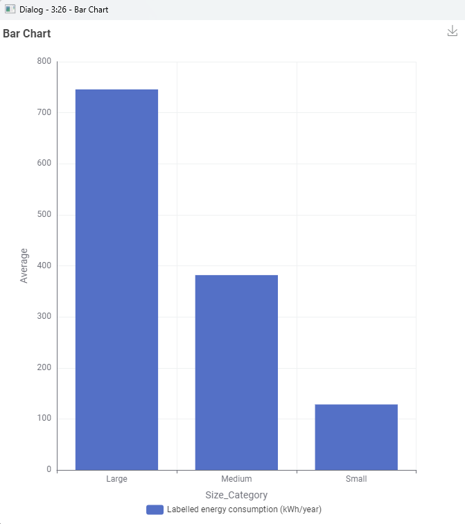
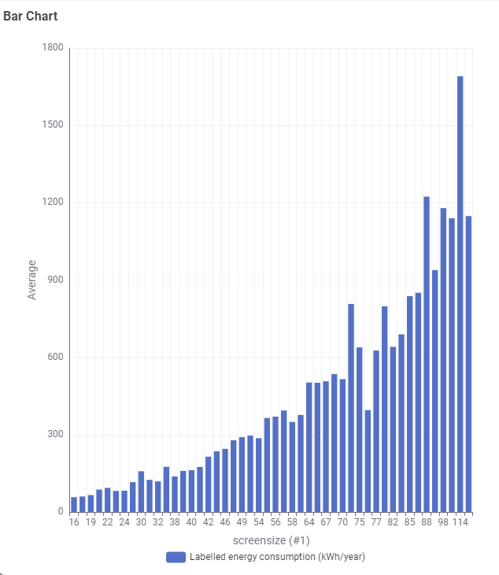

The Cost of Going Big: TV Screen Size vs Energy Demand
Modern display marketing pushes consumers toward increasingly massive panels. While screen size scales diagonally in inches, surface area and backlight arrays grow quadratically. Using Australian Energy Rating compliance data, we analyzed how panel scaling impacts your power bill.
1. Aggregated Size Category Comparison
Televisions were categorized into Small (<44"), Medium (44"–65"), and Large (>65") using our KNIME data processing pipeline.

Key Insight: The jump from a Small display (~130 kWh/year) to a Large living room panel (~745 kWh/year) represents a 470% increase in average electricity consumption, adding substantial recurring costs over a standard 7-year TV lifespan.
Small Displays (<44")
~130 kWh/yr
Estimated operating cost: ~$39/year. Ideal for bedrooms, home offices, and second screens.
Medium Displays (44"–65")
~385 kWh/yr
Estimated operating cost: ~$115/year. The current standard sweet-spot for Australian households.
Large Displays (>65")
~745+ kWh/yr
Estimated operating cost: ~$223+/year. High-intensity home theaters requiring robust ventilation and power.
2. Granular Inch-by-Inch Consumption Curve
Examining individual screen sizes (from 16" through to 116") reveals an exponential power curve rather than a linear increase.

Technical Context: Notice the sharp volatility and upward spike beyond the 75-inch threshold. Flagship ultra-large TVs (85" to 114") push between 800 and 1,700 kWh/year due to high-nit Mini-LED zones and increased cooling overheads needed to maintain HDR peak brightness levels.
Consumer Recommendations
Right-Size for Distance
Calculate optimal viewing distance before buying. Buying an 85" TV for a small living room wastes electricity without offering significant immersion gains.
Leverage Ambient Light Sensors
Enable automatic brightness adjustment in TV picture settings to throttle power draw during evening viewing.